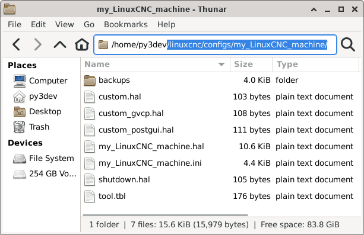
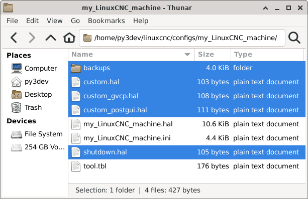
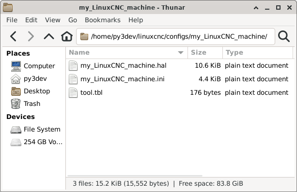
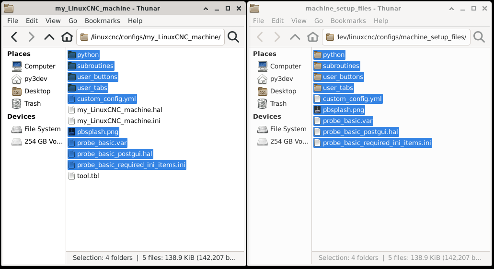
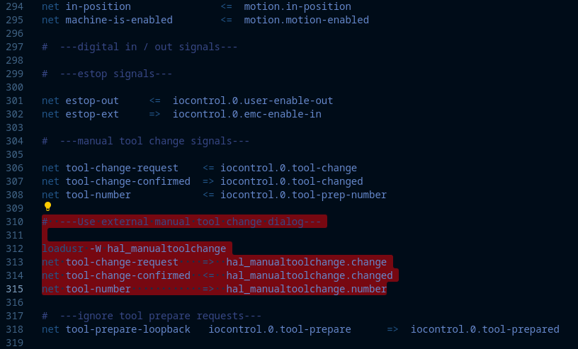

Machine Configuration (INI, HAL, Files)
Creating a working Machine Configuration for Probe Basic
Probe Basic uses some different methods to offer its feature-rich user experience, which requires customized files and settings inside the HAL and INI files to function properly. Below is a guide to help create a working machine configuration for Probe Basic. This guide assumes a basic installation with manual tool changes. A future document will be available for more complex configurations with ATC and Coolant Cannon functionality.
Step 1: Create a basic configuration
Create a configuration for your machine using Pncconf or mesact/mesact2 from the LinuxCNC menu in the applications drop-down in the upper menu bar. In this example, we are using Pncconf.
It is Recommended to use the Axis GUI display for this initial build.
Have your machine’s wiring schematic premade to make filling in the required information fast, easy, and accurate in Pncconf.
After completing the Pncconf configuration builder and creating a new machine configuration saved in the LinuxCNC config directory, start LinuxCNC using your new config to verify there are no errors.
Test the machine to verify the base functionality is correct (e.g., jogging, spindle function, axis motion).
Once completed and found to function correctly, proceed to step 2.
Step 2: Copy required files
In the LinuxCNC config folder, locate your new config folder and the “probe_basic_machine_config_setup_files” folder.
Open two folder windows on the desktop: the new Pncconf folder created for your machine and the probe_basic_machine_config_setup_files folder.
Clean up the Pncconf folder by removing unneeded files (see images below for reference).
Copy the required files from the probe_basic_machine_config_setup_files folder to the Pncconf config folder.
*the latest DEVELOP version requires ALL folders and files to be copied over (newly added files may not be shown in the images below)!*
As built pncconfig folder
Unneeded pncconfig files highlighted
Cleaned up pncconfig folder
Files to be Copied from probe_basic_machine_config_setup_files folder

Files Copied to pncconfig folder

Step 3: Edit INI files
Open the Pncconf “my_LinuxCNC_machine.ini” file side by side with the supplied “probe_basic_required_ini_items.ini” file in a text editor.
Integrate the lines from “probe_basic_required_ini_items.ini” into your existing file: - If a line is present in your machine file, use the Probe Basic settings for that line. - If a line is not in your machine file, copy it to the appropriate section in “my_LinuxCNC_machine.ini”.
Note that only ONE postgui HAL file can be called. Add any additional items to the existing probe_basic_postgui.hal file.
Save the file and delete the “probe_basic_required_ini_items.ini” file from the folder.
Required ini file items for Probe Basic
[DISPLAY] DISPLAY = probe_basic # This sets the display to use the probe basic interface OPEN_FILE = ~/linuxcnc/nc_files/pb_examples/blank.ngc # This sets the default file to open when starting probe basic CONFIG_FILE = custom_config.yml # This sets the custom config file to use for probe basic # and is used to set the custom config settings for probe basic # or to add persisten widget settings that users add to the # interface in any of the user tabs or user button customizable # ui files. # If Lathe configuration is used, choose only one the following settings. LATHE = 1 # This sets the lathe mode to on, if your machine is a lathe # with front tool post setting active for correct backplotter # and x axis jog key functionality. BACK_TOOL_LATHE = 1 # This sets the lathe back tool post setting to on, if your machine # has a back tool post, this will set the backplotter and x axis jog # key functionality to use the back tool post for lathe machines. MASTER_TOOL_OFFSET_MODE = true # Lathe Only: Enables Master Tool Offset Mode for tool management. # In this mode, one tool is designated as the "master" tool with X0/Z0 # offsets, and all other tools are measured and stored relative to the # master tool rather than the machine coordinate system. This provides # several benefits: # * Simplified tool measurement workflow (measure relative to known tool) # * Ability to change master tool assignment without remeasuring all tools # * Master Tool Promotion: instantly promote any tool to master while # preserving all tool-to-tool spatial relationships # When enabled, use the touch_off_x_mt.ngc and touch_off_z_mt.ngc # subroutines for tool measurement, and access the Master Tool Promotion # feature from the "Master Tool Number" field in the Tool Offsets tab. # Set to true to enable, false or omit to use standard LinuxCNC tool offsets. MAX_FEED_OVERRIDE = 2.000000 # This sets the maximum feed override for the feed override slider MAX_SPINDLE_OVERRIDE = 2.000000 # This sets the maximum spindle override for the spindle override slider MIN_SPINDLE_OVERRIDE = 0.500000 # This sets the minimum spindle override for the spindle override slider # this is safest not set to zero to prevent spindle damage INTRO_GRAPHIC = pbsplash.png INTRO_TIME = 3 # These settings set the splash screen graphic and # the time in seconds to display it during startup. INCREMENTS = JOG .01in .001in .0001in # The recommended increments setting is # JOG + 3 Increment Settings for best display # appearance in the interface without button # spacing becoming a problem. USER_TABS_PATH = user_tabs/ # This sets the path for the user tabs # a main user tab and a sidebar user tab # can be created in the user_tabs folder # these tabs can be customized for adding # any features or widgets from qtpyvcp # in QT Designer and will not be overwritten # during updates to probe basic. USER_BUTTONS_PATH = user_buttons/ # This sets the path for the user buttons to be # loaded from the USER_BUTTONS folder, this ui file # can be edited for customized button display in the # lower left section of the main screen and the ui file # will not be overwritten on update. USER_DROS_PATH = user_dro_display/ # This sets the poath for the dro sub ui files # to be loaded from the DRO_DISPLAY setting below DRO_DISPLAY = XYZ # This setting sets the Axes to display in the DRO # Options for mill are: # XYZ # XYZA # XYZAB # XYZAC # XYZBC # USER (which contains XYZABC, and can be edited or customized) # Options for lathe are: # XZ # XZC # XYZC # USER (which contains XYZABC, and can be edited or customized) GEOMETRY = XYZ # This setting is used by the backplotter to set axes translation # and should match your machine configuration axes. OFFSET_COLUMNS = XYZ # This setting sets the columns to display in the Offsets Table # Typical settings for mill are: XYZR # Typical settings for lathe are: XZ # Options are: # X = X Offset # Y = Y Offset # Z = Z Offset # A = A Offset # B = B Offset # C = C Offset # U = U Offset # V = V Offset # W = W Offset # R = Rotation Offset TOOL_TABLE_COLUMNS = TZDR # This setting sets the columns to display in the tool table # Typical settings for mill are: TZDR # Typical settings for lathe are: TXZIJDQR # Options are: # T = Tool Number # P = Pocket Number # X = Tool X Offset # Y = Tool Y Offset # Z = Tool Z Offset # A = Tool A Offset # B = Tool B Offset # C = Tool C Offset # U = Tool U Offset # V = Tool V Offset # W = Tool W Offset # D = Tool Diameter Offset # I = Front Angle (Lathe Only) # J = Back Angle (Lathe Only) # Q = Tool Orientation (Lathe Only) # R = Remark or Tool Description KEYBOARD_JOG = true # true = keyboard jogging turned on # defaults to keyboard jog safty active requiring ctrl+jog key # ctrl+jog key speed adheres to config jog speed and jog speed slider # ctrl+shift+jog key jogs at max linear velocity rapid speed # false = keyboard jogging turned off KEYBOARD_JOG_SAFETY_OFF = true # true = keyboard jog safty off, only jog key is needed for motion # jog key speed adheres to config jog speed setting and jog speed slider # shift+jog key jogs at max linear velocity rapid speed # false = keyboard jog safty activeon ATC_TAB_DISPLAY = 0 # ATC tab display options # 0 = Hide atc tab # 1 = Carousel atc display # 2 = Rack atc display USER_ATC_BUTTONS_PATH = user_atc_buttons/ # This can be commented out if not using ATC # This sets the path for the user atc buttons to be # loaded from the USER_ATC_BUTTONS folder, this ui file # can be edited for customized button display in the # MANUAL ATC tab in the ATC tab, the ui file will reside # in the usrs config folder # Non ATC machines use the following RS274NGC section. [RS274NGC] RS274NGC_STARTUP_CODE = F10 S300 G20 G17 G40 G49 G54 G64 P.001 G80 G90 G91.1 G92.1 G94 G97 G98 PARAMETER_FILE = probe_basic.var OWORD_NARGS = 1 NO_DOWNCASE_OWORD = 1 SUBROUTINE_PATH = subroutines ON_ABORT_COMMAND = O<on_abort> CALL # ATC machines use the following PYTHON and RS274NGC section. [PYTHON] TOPLEVEL = ./python/toplevel.py PATH_APPEND = ./python/ [RS274NGC] RS274NGC_STARTUP_CODE = F10 S300 G20 G17 G40 G49 G54 G64 P0.001 G80 G90 G91.1 G92.1 G94 G97 G98 PARAMETER_FILE = probe_basic.var OWORD_NARGS = 1 NO_DOWNCASE_OWORD = 1 SUBROUTINE_PATH = subroutines REMAP=M6 modalgroup=6 prolog=change_prolog ngc=toolchange epilog=change_epilog REMAP=M10 modalgroup=6 argspec=P ngc=m10 REMAP=M11 modalgroup=6 argspec=p ngc=m11 REMAP=M12 modalgroup=6 argspec=p ngc=m12 REMAP=M13 modalgroup=6 ngc=m13 REMAP=M21 modalgroup=6 ngc=m21 REMAP=M22 modalgroup=6 ngc=m22 REMAP=M23 modalgroup=6 ngc=m23 REMAP=M24 modalgroup=6 ngc=m24 REMAP=M25 modalgroup=6 ngc=m25 REMAP=M26 modalgroup=6 ngc=m26 [HAL] HALUI = halui POSTGUI_HALFILE = probe_basic_postgui.hal TWOPASS = on [TRAJ] AXES = 3 COORDINATES = X Y Z
Step 4: Modify Post Gui Hal File
Modify the following lines by commenting them out, they are used for testing in probe basic sim only and will error in the real machine configs. the spindle feedback line can be used if it is setup in the main hal and the hardware is on the machine to provide a spindle speed input to linuxcnc.
loadrt time loadrt not addf time.0 servo-thread addf not.0 servo-thread net prog-running not.0.in <= halui.program.is-idle net prog-paused halui.program.is-paused => time.0.pause net cycle-timer time.0.start <= not.0.out net cycle-seconds qtpyvcp.timerseconds.in <= time.0.seconds net cycle-minutes qtpyvcp.timerminutes.in <= time.0.minutes net cycle-hours qtpyvcp.timerhours.in <= time.0.hours # *** Time items required for Probe Basic to run *** # ---manual tool change signals--- net tool-change-request => qtpyvcp_manualtoolchange.change net tool-change-confirmed <= qtpyvcp_manualtoolchange.changed net tool-number => qtpyvcp_manualtoolchange.number # *** Probe graphic simulation trigger push probe tip *** # net probe-in => qtpyvcp.probe-in.out <----comment this line out> net probe-in <= qtpyvcp.probe-led.on # *** Set line below for actual spindle readout from your hal file *** # net spindle-rpm-filtered scale_to_rpm.out => qtpyvcp.spindle-encoder-rpm.in <----comment this line out or connect to your rpm net pin>
Step 5: Modify HAL file
Add digital and analog IO to the HAL file by modifying the following line:
loadrt [EMCMOT]EMCMOT servo_period_nsec=[EMCMOT]SERVO_PERIOD num_joints=[KINS]JOINTSAdd this to the end of the line:
num_dio=6 num_aio=3The finished edit should look like this:
loadrt [EMCMOT]EMCMOT servo_period_nsec=[EMCMOT]SERVO_PERIOD num_joints=[KINS]JOINTS num_dio=6 num_aio=3

Remove the red highlighted manual tool change dialog section from the bottom of the hal file as shown in the image below. Probe basic uses its own built in dialog for manual tool changes which give the user better tool information and matches the ui visual theme more appropriately.
Launching Probe Basic
Under the CNC section of the drop-down applications menu, find your machine configuration and select it to launch.
Check the box at the bottom of the launch window to create a desktop icon for easier starts.
To set the Probe Basic icon: - Right-click the desktop launcher and select “edit launcher” - Click the current icon image, this will open the icon folder - Find and select the icon named “probe_basic_mill”
You should now be ready to use Probe Basic with your machine configuration.